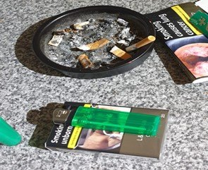
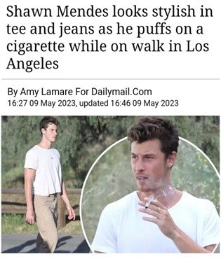
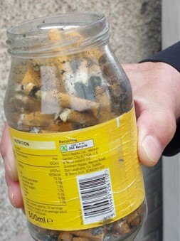
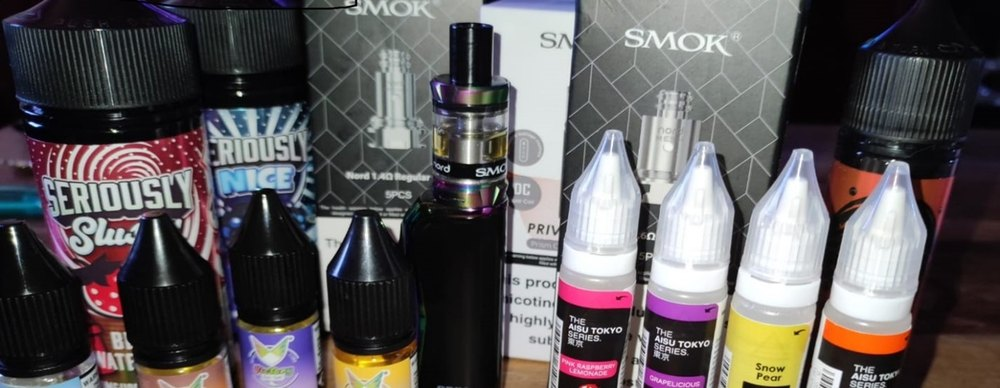

Evidence
Visual Evidence
In the study, we adopt a view of smoking as a social problem; that the causes and consequences of tobacco use are socially patterned. The project focuses on the social circumstances of the cost-of-living crisis.
We engage with tobacco consumers and those directly impacted by tobacco consumption in deprived communities to generate new evidence and knowledge on the social circumstances and drivers of smoking, and of cessation and prevention, in the context of the cost-of-living crisis.
We embrace diverse forms of evidence, and combined different forms of knowledge: on lived experience and other service data and population statistics. This is our gallery of Photovoice data collected, selected and captioned by community researchers.







